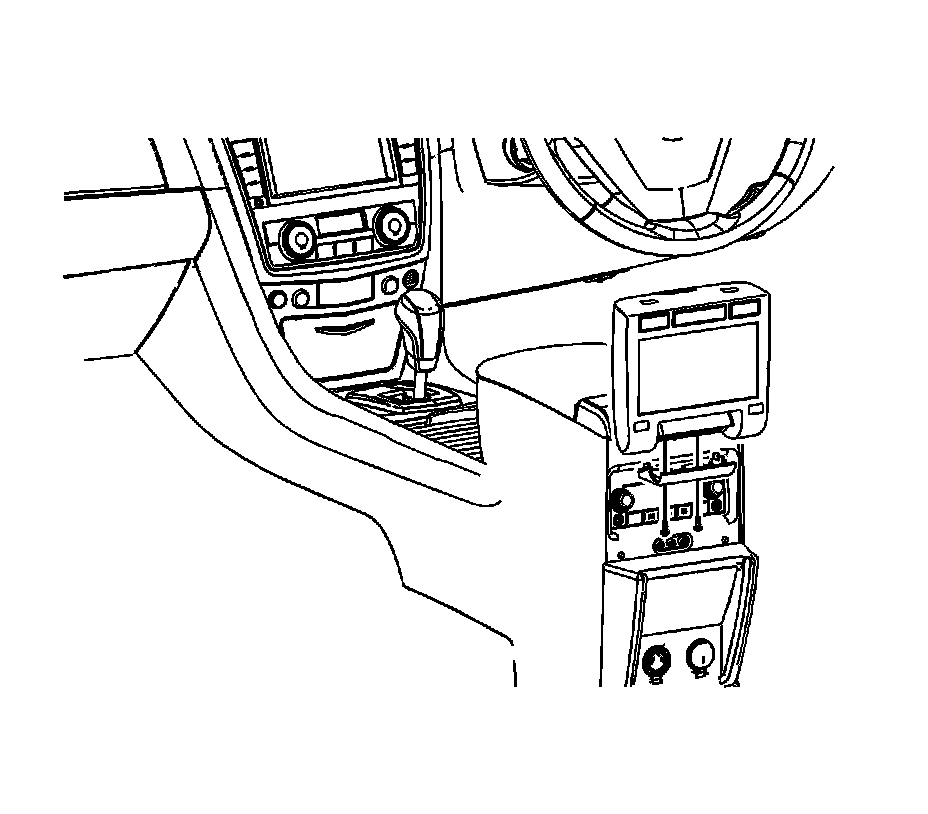
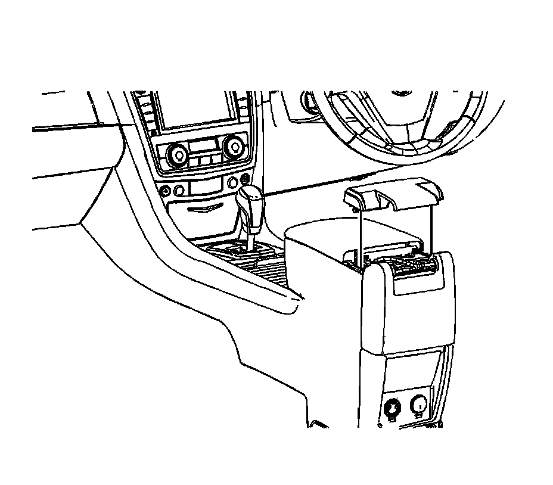
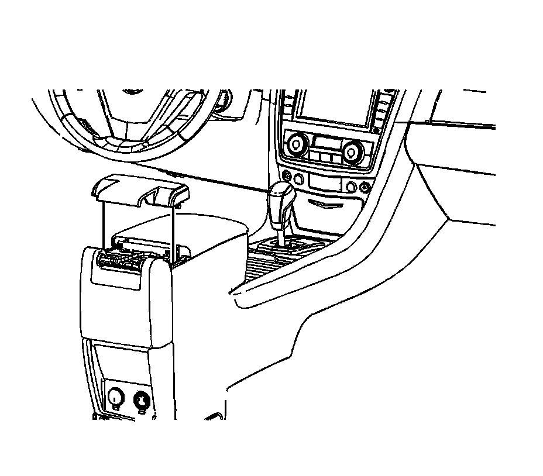
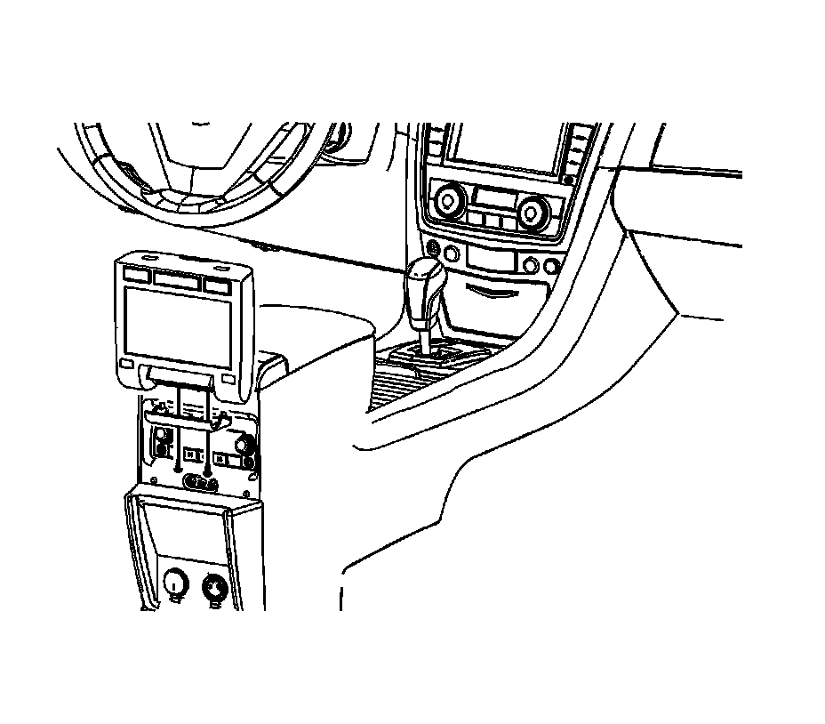

Front Floor Console Rear Cover Replacement (Right Hand Drive)
Front Floor Console Rear Cover Replacement (Right Hand Drive)
Removal Procedure

1. Open the DVD screen to the viewing position.
2. Remove the two screws securing the console lower rear trim cover.
3. Remove the console lower rear trim cover.

4. Close the DVD screen to the storage position.
5. Pull upward removing the console upper trim cover.
Installation Procedure

1. Position the console rear upper trim cover to the console.
2. Push down firmly ensuring the console rear upper trim cover retaining clips engage securing the cover to the console assembly.
3. Open the DVD screen to the viewing position.

Install the console rear lower trim cover.
Notice: Refer to Fastener Notice (Fastener Notice) .
4. Install the console rear lower trim cover retaining screws.
Tighten the screws to 2 N.m (18 lb in).